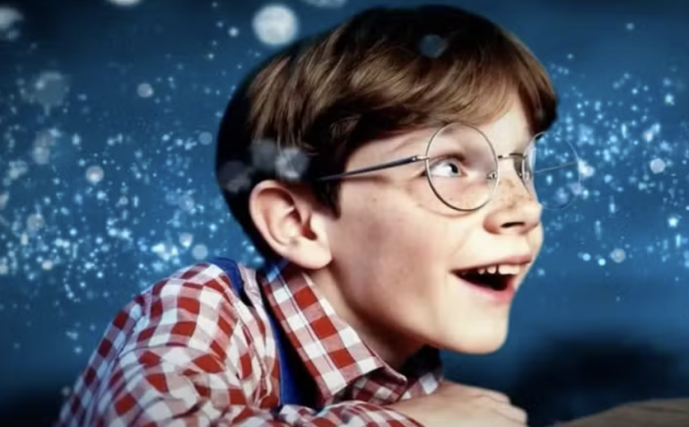
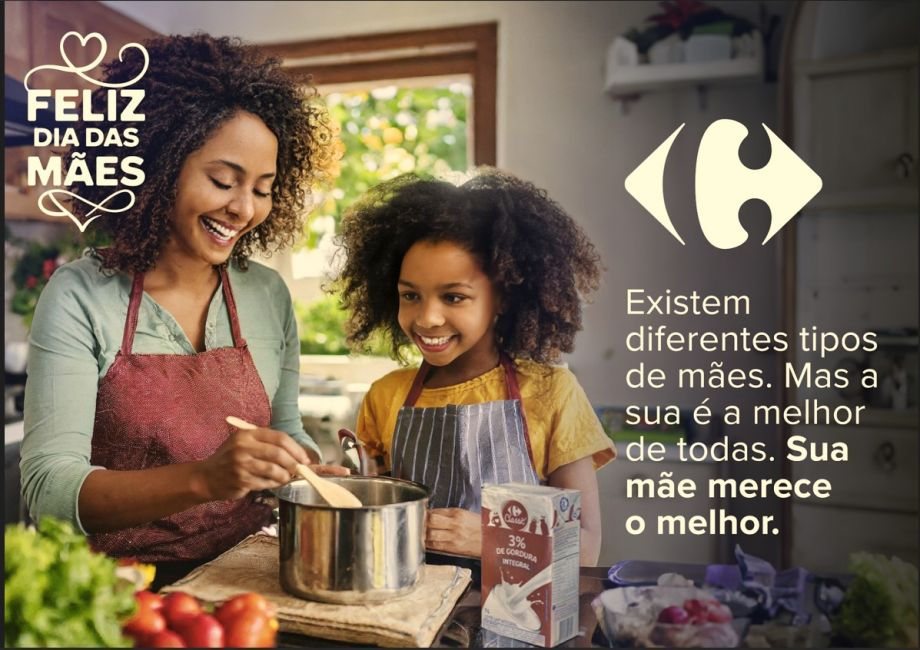

Como a IA faz vídeos?
1. Resposta gerada por uma IA chatbot (Gemini):
A IA gera vídeos combinando várias tecnologias de aprendizado de máquina para criar sequências visuais a partir de comandos de texto, imagens ou áudio. Ela analisa grandes volumes de dados para aprender padrões e, em seguida, usa algoritmos para compor novos vídeos, muitas vezes com sons e estilos pré-definidos. Os usuários fornecem um "prompt" (como um texto ou uma imagem) e a IA cria o vídeo com base nessa entrada, personalizando aspectos como o estilo, a iluminação e os movimentos.
2. Resposta de seres humanos:
"Modelos de IA generativa, como Stable Diffusion, estão criando novos vídeos a partir de vídeos existentes, aplicando estilos específicos por meio de um prompt de texto ou referência de imagem. Um projeto no GitHub, stable-diffusion-videos, oferece exemplos úteis e dicas sobre como criar videoclipes e vídeos que podem se transformar a partir de prompts de texto com Stable Diffusion."
- segundo Equipe DSA (Data Sciense Academy)
CASOS REAIS
Toys ‘R’ Us

A antiga loja de brinquedos Toys "R" Us chegou a ser considerada a primeira empresa a realizar uma propaganda 100% feita com inteligência artificial, o que elevou sua fama na época e, consequentemente, levantou muitas polêmicas.
"O vídeo de um minuto de duração mostra o falecido fundador da Toys “R” Us, Charles Lazarus, como uma criança que sonha com uma loja de brinquedos e com Geoffrey the Giraffe, a mascote da marca. A Toys 'R' Us disse que tudo foi feito usando a Sora, ferramenta da OpenAI que converte texto em vídeo e que ainda não foi liberada para o público.
Aproximadamente 20 pessoas da equipe de Kleverov, incluindo designers, diretores de arte e animadores, colaboraram com Miller Olko e outro executivo de marketing da Toys 'R' Us no projeto. Eles geraram cada tomada ou quadro dando à Sora vários parágrafos de instruções, de acordo com Kleverov. A ferramenta texto-para-vídeo frequentemente entendia mal as intenções dos escritores, às vezes exigindo centenas de revisões no texto, contou ele.
A Sora concluiu de 80% a 85% do trabalho antes que a agência começasse a fazer pequenas correções nas imagens, semelhante ao modo em que as equipes de pós-produção ajustam cores ou removem manchas após as filmagens de anúncios padrão, de acordo com Kleverov.O produto final contém inúmeras imperfeições. O ator virtual do anúncio não parece a mesma criança em todas as tomadas, por exemplo, fato mencionado pelos críticos on-line.
'The Origin of Toys ‘R’ Us' (A Origem da Toys 'R' Us) gerou uma série de respostas, com profissionais da criação descrevendo o trabalho no LinkedIn e X como 'brilhante' e 'emocionante', ou como um 'insulto abismal' que 'deveria deixá-lo aterrorizado'.
As fortes reações ao trabalho se devem em grande parte aos temores sobre o potencial da IA de minar a qualidade e o emprego na indústria de marketing, de acordo com Chris Beresford-Hill, diretor global de criação da agência BBDO."
Segundo Patrick Coffee no The Wall Street Journal (01/07/2024)
Como a IA faz imagens?
1. Resposta gerada por uma IA chatbot (Perplexity):
A inteligência artificial (IA) produz imagens por meio de modelos avançados de aprendizado de máquina, especialmente redes neurais profundas. Um método comum é o uso de modelos generativos adversariais (GANs), que consistem em duas redes neurais: uma geradora cria imagens e outra discriminadora avalia a autenticidade delas, promovendo uma melhoria contínua até que a imagem gerada pareça original e realista. Outra técnica é o modelo de difusão, que começa com uma imagem caótica de pixels aleatórios e, guiado por um texto descritivo (prompt), organiza esses pixels em uma imagem coerente, repetindo esse processo várias vezes para chegar ao resultado final.
Esses modelos são treinados com grandes bancos de dados de imagens e textos associados, de modo que aprendem os padrões e características dos objetos, estilos e conceitos visuais. Quando recebem um comando em linguagem natural, eles utilizam essas informações aprendidas para criar imagens completamente novas, que podem ser realistas ou estilizadas, baseadas nas associações estatísticas entre texto e imagem presentes no treinamento.
Em resumo, a IA não replica imagens existentes, mas gera novas imagens a partir dos dados e padrões que assimilou, por meio de interações entre redes neurais que criam e avaliam as imagens, ou por processos progressivos que transformam "ruído" em imagens guiadas por descrições textuais. Essa tecnologia é usada em diversas aplicações, desde criação artística até edição e melhoria automática de fotos
2. Resposta de seres humanos:
"Modelos generativos baseados em IA podem ser usados para criar novas imagens a partir de prompts de linguagem natural, que é uma das técnicas mais populares com ferramentas e aplicativos atuais. O objetivo da geração de imagem a partir de texto é criar uma imagem que represente com precisão o conteúdo de um determinado prompt."
- segundo Equipe DSA (Data Sciense Academy)
CASOS REAIS
Carrefour

"São Paulo, julho de 2024 – O Carrefour é a primeira empresa do setor de varejo alimentar a lançar uma campanha 360º criada com Inteligência Artificial (IA) Generativa Adobe. A iniciativa foi feita para o Dia das Mães 2024 como forma de avançar na jornada de inovação da companhia. Para isso, a House Carrefour, time interno de marketing, usou a IA Generativa da Adobe – o Adobe Firefly – para elaborar e apresentar uma persona única que se conectava com o público nacional em diversos pontos de contato, tanto no e-commerce quanto nas lojas físicas, integrando todo o ecossistema da marca.
Por se tratar de uma iniciativa nova para todo o time Carrefour, um dos primeiros passos foi uma imersão 360º na tecnologia. Nessa fase, a equipe da House passou por um treinamento com a Adobe para entender como aproveitar todo o potencial do Adobe Firefly. Como o objetivo também era retratar a mesma personagem inserida em diversos cenários, esses desdobramentos de imagens exigiram dos profissionais o aperfeiçoamento em comandos de texto bem direcionados."
Trechos do site "Portal da Propaganda" (15/07/2024)
Além dessa campanha em específico, a empresa tem outras que também foram produzidas utilizando-se da inteligência artificial, a exemplo da campanha internacional de TV e digital "Volta às aulas", que também gerou retorno.
Ademais, o Carrefour tem utilizado desse mesmo artifício para personalizar a experiência dos clientes por meio de sistemas de recomendação capazes de oferecer ofertas mais relevantes para o consumidor a que se destinam. Com base nos resultados de contato com as marcas e pessoas, a satisfação destes aumentou consideravelmente, assim como as vendas.
Não estando avessos a essa tecnologia crescente, a empresa ainda utiliza chatbots e assistentes virtuais baseados em IA para oferecer atendimento a qualquer hora e o grupo Carrefour faz uso dela para gerir o estoque das lojas, a fim de otimizar tarefas e